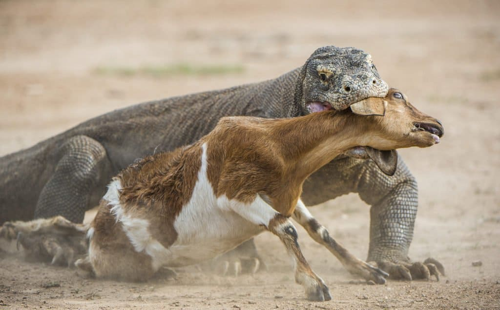
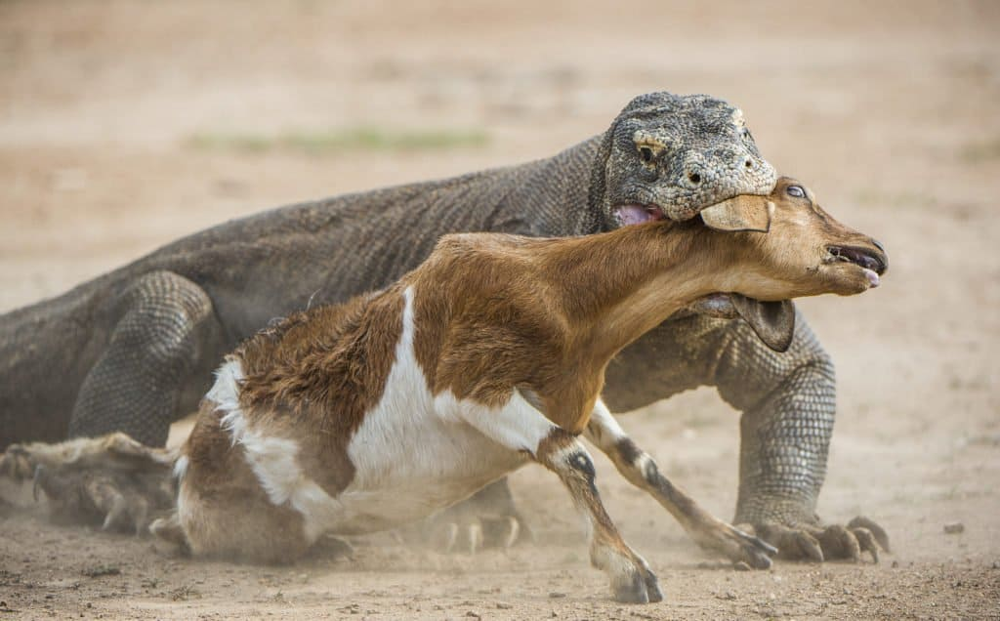

DRAGÓN DE KOMODO

El dragón de Komodo (Varanus komodoensis), también llamado monstruo de Komodo y varano de Komodo, es una especie de saurópsido de la familia de los varánidos, endémico de algunas islas de Indonesia central. Es el lagarto de mayor tamaño del mundo, con una longitud media de dos a tres metros y un peso de unos 70 kg. A consecuencia de su tamaño, son los superpredadores de los ecosistemas en los que viven. A pesar de que se alimentan principalmente de carroña, también cazan y tienden emboscadas a sus presas, que incluyen invertebrados, aves y mamíferos.
 
